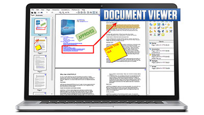

|
Document Viewer Demo
Demonstrates Document Viewer support.
- View document, vector, and raster image formats in one viewer
- Document-specific interactive tools
- View and edit complex document objects and features
- Fully customizable user interface uses generic parent containers
- Maximize performance and conserve system resources through efficient large-document paging and thumbnail browsing with configurable lazy-loading
- Robust options and functions for managing local, global, and web cache on any device
|
 |